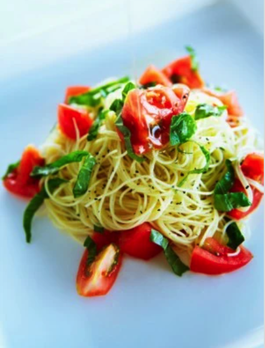

Spaghetti Aglio e Olio

描述
意大利面（Spaghetti）Aglio e Olio是一道简单又美味的意大利传统面食。
原料：
- 意大利面：250 克
- 橄榄油：3 汤匙
- 大蒜 (切片)：3 瓣
- 红辣椒 (去籽切丁)：1 个
- 新鲜欧芹 (切碎)：2 汤匙
- 帕尔马干酪 (刨丝，可选)：适量
- 盐：适量
- 黑胡椒粉：适量
做法：
- 将意大利面煮至 al dente 熟度，沥干备用。
- 在平底锅中加热橄榄油，加入切片大蒜和红辣椒丁，小火煮至香味释放。
- 将煮熟的意大利面放入平底锅中，撒上新鲜欧芹，轻轻翻炒均匀。
- 调味，撒上帕尔马干酪（可选），即可享用。